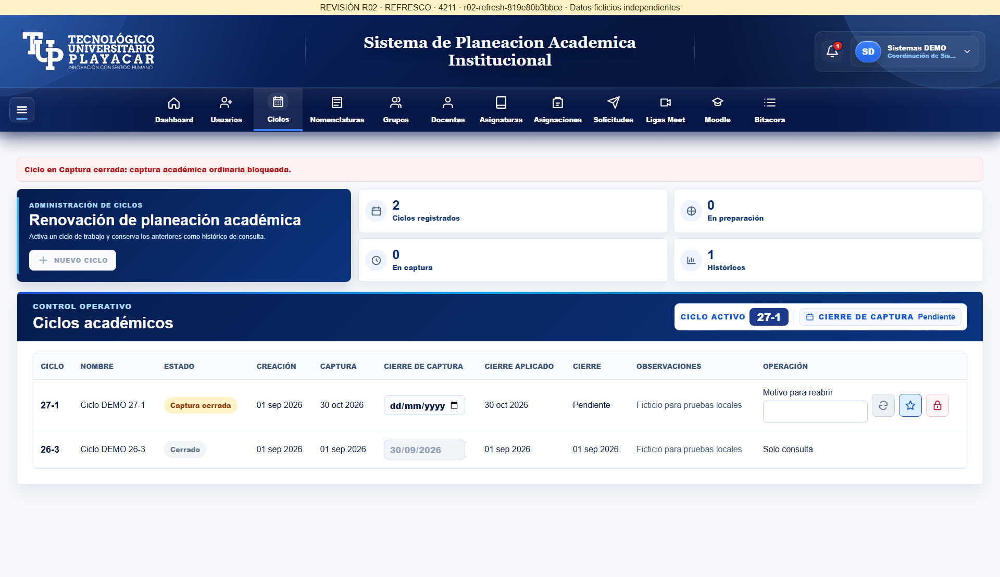
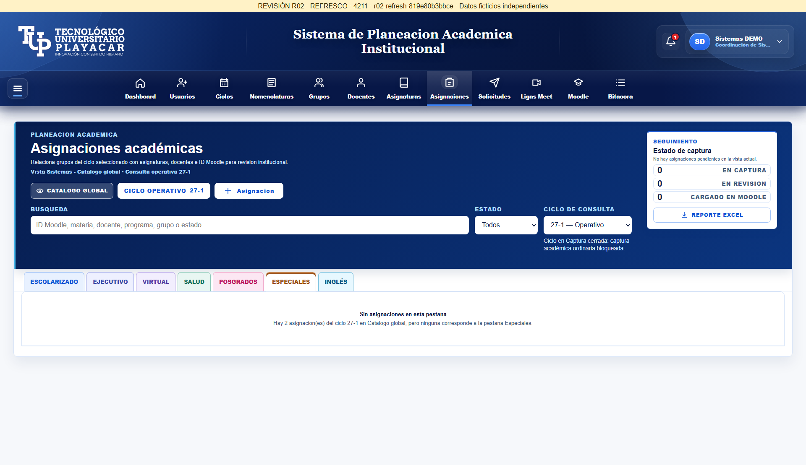
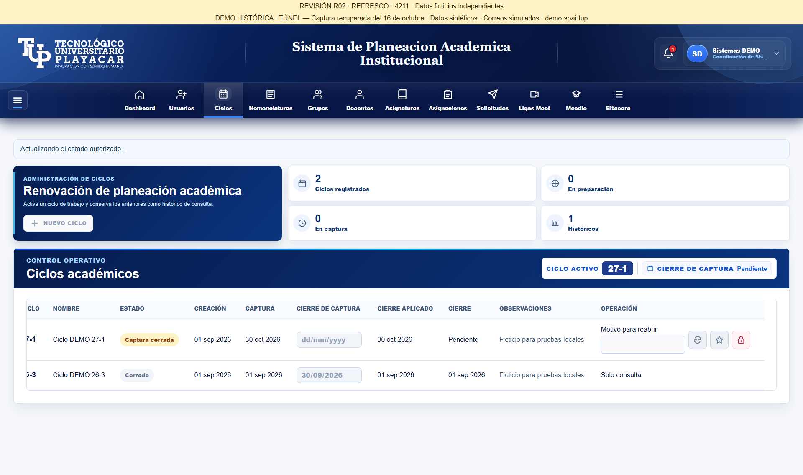
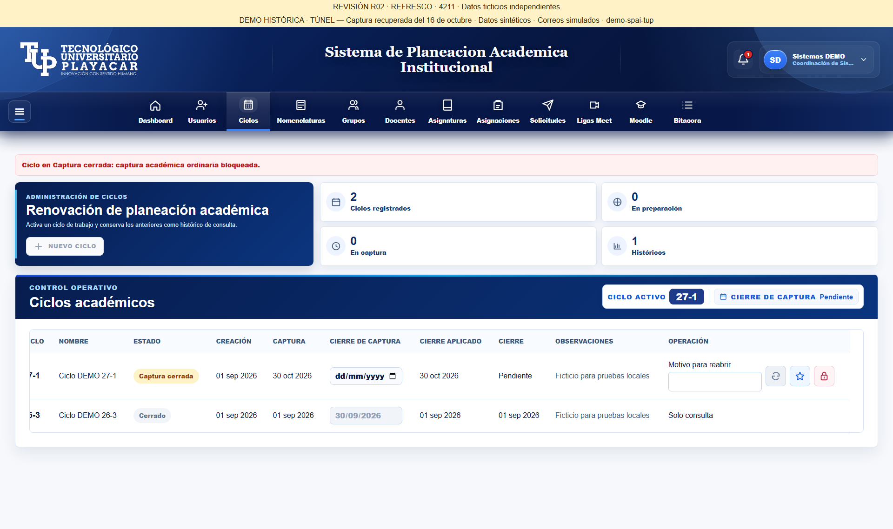
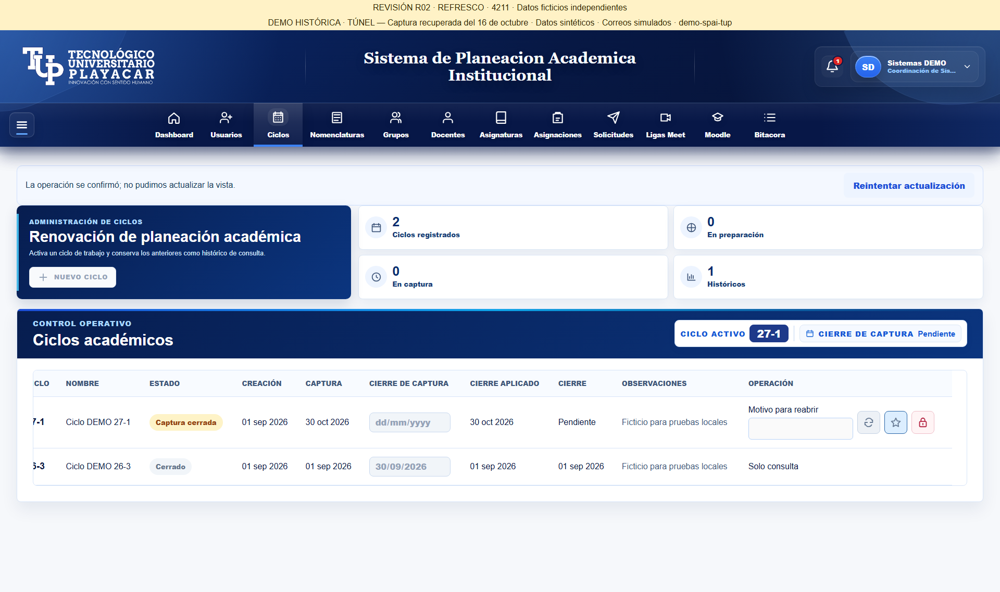
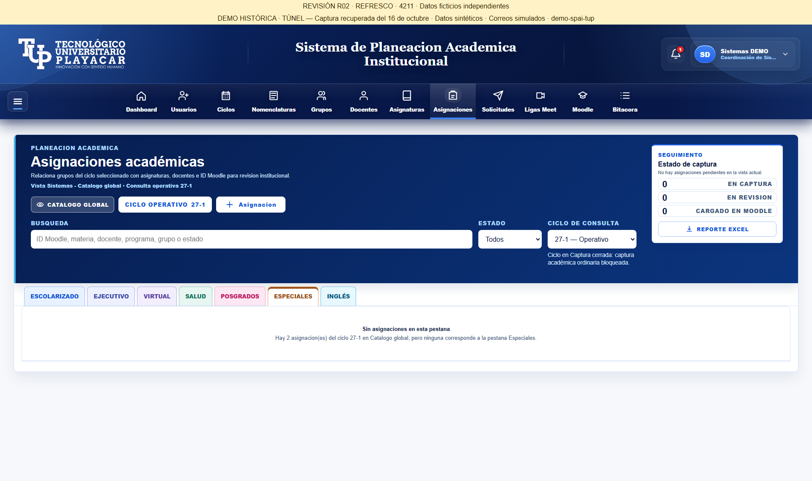

R02 — Refresco después de operaciones
30/10/2026 · Codex · SHA 819e80b3bbcef27279c69608b89f5de8f685ccd0 · r02-refresh-819e80b3bbce
22 pruebas Node y 2 grupos UI PASS. Inspección técnica local; aceptación humana pendiente. Las capturas de ensayo llevan banner provisional; las dos primeras muestran la versión entregada.
Abrir candidata independiente 4211 · Resultados UI · Vinculación de compilación
Versión entregada: Ciclos
Versión entregada: Asignaciones / Especiales
Consulta demorada: ciclo conservado y acciones bloqueadas
Transición confirmada y vista actualizada
Operación confirmada, fallo de consulta y reintento
Reintento desde Asignaciones sin repetir la operación